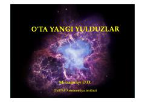

OYOʻta yangi yulduzlarning paydo boʻlishi va ularning astronomik ahamiyati haqida ilmiy qoʻllanma.
Ushbu kitob oʻta yangi yulduzlarning rivojlanish bosqichlari va ularning portlash jarayonlari haqida maʼlumot beradi. Unda tarixda kuzatilgan mashhur oʻta yangi yulduzlar, jumladan SN 1006 va SN 1054 kabi hodisalar ilmiy nuqtai nazardan tushuntirilgan.